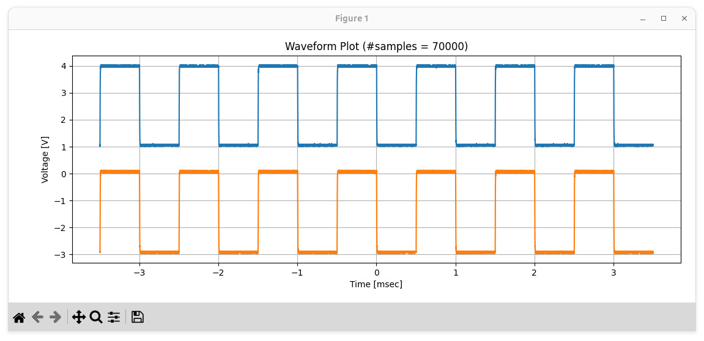

การเขียนโปรแกรม Python เชื่อมต่อ Rigol DS2072A (ผ่านเครือข่าย LAN)#
บทความนี้กล่าวถึง ตัวอย่างการตั้งค่าออสซิลโลสโคป RIGOL DS2072A เพื่อใช้งานผ่านระบบเครือข่าย Ethernet / LAN และเขียนโปรแกรมเชื่อมต่อโดยใช้โพรโทคอล TCP/IP ตามมาตรฐานของ LXI
Keywords: Rigol DS2072A, Digital Storage Oscilloscope, LXI, Python Programming
▷ Rigol DS2072A#
ในบทความนี้จะกล่าวถึงการเขียนโค้ด Python เพื่อเชื่อมต่อกับออสซิลโลสโคปของบริษัท Rigol Technologies Inc. รุ่น DS2072A และการใช้งานในระบบเครือข่าย TCP/IP ผ่าน Ethernet/LAN
อุปกรณ์ DS2072A มี 2 ช่องสัญญาณอินพุต และเชื่อมต่อผ่านพอร์ต LAN ได้ รองรับ LXI (LAN eXtensions for Instrumentation) ซึ่งเป็นมาตรฐานการสื่อสารผ่านเครือข่าย Ethernet สำหรับอุปกรณ์เครื่องมือวัด และพัฒนาโดยกลุ่ม LXI Consortium
คุณสมบัติเบื้องต้นของ Rigol DS2072A (ในปัจจุบันถือว่า อุปกรณ์รุ่นนี้ เลิกจำหน่ายแล้ว):
- ช่องสัญญาณอินพุต: 2 ช่อง (CH1 และ CH2)
- Analog Bandwidth: 70 MHz (อัปเกรดได้ถึง 300 MHz)
- Sampling Rate: 2 GSamples/s (Single-channel) | 1GSamples/s (Dual-channel)
- Memory Depth (max.): 14 Megapoints (Standard) | 56 Megapoints (Upgraded)
- Display: 8-inch TFT (800x480) WVGA
- Vertical Resolution: 8-bit
- Interface: USB และ LAN (Ethernet)
การเตรียมการเชื่อมต่อผ่าน LAN มีขั้นตอนดังนี้
- เชื่อมต่อสาย LAN จาก Rigol DS2072A เข้ากับเครือข่ายเดียวกับคอมพิวเตอร์ของผู้ใช้
- ไปที่เมนู Utility > I/O Setting > LAN Config เพื่อดูหรือกำหนดค่า IP Address ของออสซิลโลสโคป
- ตรวจสอบว่า IP Address ของ DS2072A สามารถคำสั่ง
pingได้จากเครื่องคอมพิวเตอร์
รูป: การตรวจสอบโมเดลของสโคป

รูป: การตรวจสอบการตั้งค่าสำหรับการเชื่อมต่อเครือข่าย
การตั้งค่าการใช้งาน DS2072A โดยการส่งคำสั่งผ่าน LXI สามารถจำแนกตามฟังก์ชันการใช้งาน เช่น
- การกำหนดโหมดการควบคุมระหว่าง Local (ควบคุมจากปุ่มกดหน้าจอของเครื่อง) และ Remote (ควบคุมจากระยะไกลผ่านเครือข่าย)
- การตั้งค่าเชิงเวลา (Timebase) ได้แก่:
- สเกลเชิงเวลา (Timescale หรือ Time/Div) เพื่อกำหนดความละเอียดของแกนเวลา เช่น
0.001s/div - ออฟเซตเวลา (Time Offset) ซึ่งหมายถึงการเลื่อนศูนย์กลางของคลื่นสัญญาณบนหน้าจอ ไปทางซ้ายหรือขวา
- สเกลเชิงเวลา (Timescale หรือ Time/Div) เพื่อกำหนดความละเอียดของแกนเวลา เช่น
- การตั้งค่าสำหรับแต่ละช่องสัญญาณอินพุต (CH1 และ CH2):
- การเลือกค่า Probe Attenuation Factor ตามสายวัด (โพรบ) ที่ใช้งาน เช่น
1Xและ10X - การตั้งค่าแรงดันไฟฟ้า:
- Voltage Scale (แรงดันต่อหนึ่งช่องบนหน้าจอภาพ) เช่น
1V/div - Voltage Offset (ค่าออฟเซตจากระดับ GND) ซึ่งใช้เลื่อนระดับของคลื่นสัญญาณบนหน้าจอภาพ ขึ้นหรือลง
- Voltage Scale (แรงดันต่อหนึ่งช่องบนหน้าจอภาพ) เช่น
- การเลือกค่า Probe Attenuation Factor ตามสายวัด (โพรบ) ที่ใช้งาน เช่น
- การตั้งค่าสำหรับทริกเกอร์ (Trigger Settings):
- Trigger Source: ช่องสัญญาณอินพุตที่ใช้สำหรับการทริกเกอร์ เช่น
CH1และCH2 - Trigger Mode (หรือที่เรียกว่า Sweep Mode): โหมดการจับสัญญาณ ได้แก่
AUTO,NORMAL,SINGLE - Trigger Type: ประเภทของเงื่อนไขของทริกเกอร์ เช่น ขอบสัญญาณ (EDGE), ความกว้างของพัลส์ (PULSE), หรืออื่น ๆ
- Trigger Slope: กำหนดเหตุการณ์ของทริกเกอร์บนขอบของสัญญาณ เช่น
RISING(ขอบขาขึ้น) หรือFALLING(ขอบขาลง)
- Trigger Source: ช่องสัญญาณอินพุตที่ใช้สำหรับการทริกเกอร์ เช่น
- การกำหนดขนาดของหน่วยความจำ (Memory Depth) สำหรับการจับและจัดเก็บข้อมูลของคลื่นสัญญาณ ซึ่งมีผลต่อความละเอียดของข้อมูลที่ได้ เช่น
14000,140000และ1400000เป็นต้น หากเปิดใช้งานหนึ่งช่องอินพุต แต่ถ้าเปิดช่องสัญญาณอินพุตพร้อมกัน 2 ช่อง ขนาดจะลดครึ่งหนึ่ง เป็น7000,70000และ7000000ตามลำดับ
คำสั่งตามรูปแบบที่เรียกว่า SCPI และเกี่ยวข้องกับการตั้งค่าใช้งาน DS2072A สามารถศึกษาได้จากเอกสารต่อไปนี้:
▷ ตัวอย่างการเขียนโค้ดภาษา Python#
การเชื่อมต่อกับสโคปตามรูปแบบ LXI โดยใช้ภาษา Python ก็มีไลบรารี เช่น
python-vxi11 ให้ใช้งาน
ดังนั้นให้ทำคำสั่ง pip เพื่อติดตั้งไลบรารี
$ pip install python-vxi11
ถัดไปเป็นตัวอย่างการสร้างคลาสในภาษา Python เพื่อนำไปใช้งานกับสโคป DS2072A
File: rigol_ds2000.py
import time
import vxi11
import numpy as np
class DS2072A:
def __init__(self, ip_addr):
self.ip_addr = ip_addr
self.instr = vxi11.Instrument(ip_addr)
self.instr.timeout = 1.0
self.set_mem_depth(7000)
def set_mem_depth(self, mem_depth):
# For dual channels:
self.mem_depth = mem_depth
self.write(f':ACQ:MDEP {mem_depth}')
def get_mem_depth(self):
self.mem_depth = int(self.read(':ACQ:MDEP?'))
return self.mem_depth
def close(self):
self.instr.close()
def write(self, cmd, dly=0.05):
self.instr.write(cmd)
time.sleep(dly)
def read(self, cmd, dly=0.1):
self.write(cmd, dly)
return self.instr.read().strip()
def read_raw(self, cmd, dly=0.1):
self.write(cmd, dly)
return self.instr.read_raw()
def get_idn(self):
return self.read('*IDN?').split(',')
def begin(self):
idn = self.get_idn()
if idn[1] != 'DS2302A':
print('Expected the model DS2302A')
self.remote()
def remote(self):
self.write('SYSTem:REMote')
def config_channel(self, chan, config):
if chan not in [1, 2]:
print('Invalid channel number')
return
self.write(f':CHAN{chan}:COUP {config["coupling"]}')
self.write(f':CHAN{chan}:PROB {int(config["probe_ratio"])}')
self.write(f':CHAN{chan}:SCAL {float(config["scale"])}')
self.write(f':CHAN{chan}:OFFS {float(config["offset"])}')
status = 'ON' if config['enabled'] else 'OFF'
self.write(f':CHAN{chan}:DISP {status}')
def config_timebase(self, config):
self.write(f':TIM:OFFS {config["offset"]}')
self.write(f':TIM:SCAL {config["timescale"]}')
def config_trigger(self, config):
self.write(f':TRIG:EDG:SOUR CHAN{config["chan"]}')
mode = config["mode"].upper()
self.write(f':TRIG:MODE {mode}')
if mode == 'EDGE':
self.write(f':TRIG:EDG:LEV {config["level"]}')
self.write(f':TRIG:EDG:SLOP {config["slope"]}')
self.write(f':TRIG:SWE {config["sweep"]}')
def get_waveform_params(self):
preamble = self.read(':WAV:PRE?')
p = preamble.split(',')
if len(p) != 10:
print('Waveform preamble parse error!')
return None, None
npoints = int(p[2])
xinc, xorg, xref = float(p[4]), float(p[5]), float(p[6])
yinc, yorg, yref = float(p[7]), float(p[8]), float(p[9])
params = {
'npoints': npoints,
'xinc': xinc, 'xorg': xorg, 'xref': xref,
'yinc': yinc, 'yorg': yorg, 'yref': yref
}
return params
def get_waveform(self, chan=1, mode='RAW'):
mode = mode.upper()
if mode not in ['RAW', 'NORMAL']:
print( 'Expected mode: RAW or NORMAL')
return None, None
self.write(f':WAV:SOUR CHAN{chan}')
self.write(':WAV:FORM BYTE')
if mode == 'RAW':
self.write(':WAV:MODE RAW')
self.write(':WAV:STAR 1')
self.write(f':WAV:STOP {self.mem_depth}')
else:
self.write(':WAV:MODE NORM')
self.write(':WAV:POIN 1400')
self.write(':WAV:RES')
self.write(':WAV:BEG')
params = self.get_waveform_params()
yinc = params['yinc']
yorg = params['yorg']
yref = params['yref']
xinc = params['xinc']
if mode == 'RAW':
retries = 0
done = False
while True:
status, points = self.read(':WAV:STAT?').strip().split(',')
if status == 'IDLE':
done = True
break
else:
retries += 1
if retries > 10:
break
print('Waiting for data reading..' )
time.sleep(0.1)
if done:
rawdata = self.read_raw( ':WAV:DATA?', 0.2 )
self.write(':WAV:END') # stop waveform reading
num_bytes = int( rawdata[2:11] )
rawdata = rawdata[11:-1]
data = np.frombuffer( rawdata, 'B' )
data = (data - yref - yorg) * yinc
npoints = len(data)
xmax = (npoints * xinc)
xstart = -xmax/2.0
xstop = xmax/2.0
else:
print('Invalid or missing waveform data!')
return None, None
else: # Normal mode
rawdata = self.read_raw(':WAV:DATA?')
self.write(':WAV:END')
if rawdata and rawdata.startswith(b'#'):
header_len = int(rawdata[1:2])
byte_count = int(rawdata[2:2 + header_len])
wav_data = rawdata[2+header_len : 2+header_len+byte_count]
data = np.frombuffer(wav_data, dtype='B')
data = (data - yref - yorg) * yinc
npoints = len(data)
xstart = params['xref'] + params['xorg']
xstop = xstart + (npoints * xinc)
else:
print('Invalid or missing waveform data!')
return None, None
ts = np.linspace(xstart, xstop, num=npoints )
return ts, data
def show_settings(self):
mem_depth = int(self.read(':ACQ:MDEP?'))
sample_rate = float(self.read(':ACQ:SRAT?'))
time_per_div = float(self.read(':TIM:SCAL?'))
time_offset = float(self.read(':TIM:OFFS?'))
ch1_volt_per_div = float(self.read(':CHAN1:SCAL?'))
ch1_vert_offset = float(self.read(':CHAN1:OFFS?'))
x_inc = float(self.read(':WAV:XINC?'))
x_ref = float(self.read(':WAV:XREF?'))
x_org = float(self.read(':WAV:XOR?'))
y_inc = float(self.read(':WAV:YINC?'))
y_ref = float(self.read(':WAV:YREF?'))
y_org = float(self.read(':WAV:YOR?'))
print( 'Memory Depth : ', mem_depth )
print( 'Sample Rate : ', sample_rate/1e6, 'MHz' )
print( 'Time/Div : ', time_per_div )
print( 'Time Offset : ', time_offset )
print( 'Volt/Div CH1 : ', ch1_volt_per_div )
print( 'Volt Offset CH1 : ', ch1_vert_offset )
print( 'X increment : ', x_inc )
print( 'X reference : ', x_ref )
print( 'X offset : ', x_org )
print( 'Y increment : ', y_inc )
print( 'Y reference : ', y_ref )
print( 'Y offset : ', y_org )
def run(self):
self.write(':RUN')
def is_stopped(self):
return self.read('TRIG:STAT?') == 'STOP'
def stop(self):
self.write(':STOP')
def local(self):
self.write('SYST:LOC')
โค้ดต่อไปนี้สาธิต การใช้คลาส DS2072A เพื่อตั้งค่าการใช้งานออสซิลโลสโคป DS2072A
และอ่านข้อมูลจากสโคป เพื่อนำมาแสดงรูปกราฟ จำนวน 2 ช่องสัญญาณ
File: test_ds2072a.py
import time
import matplotlib.pyplot as plt
from rigol_ds2000 import DS2072A
def main():
# Connect to the RIGOL scope at the specified IPv4 address.
scope = DS2072A('10.42.0.19')
try:
scope.begin()
# Set memory depth: 70,000 points
scope.set_mem_depth( 70000 )
# Configure the time base
scope.config_timebase({
'offset': 0.000, 'timescale': 5e-4,
})
# Configure the trigger
scope.config_trigger({
'chan': 1, 'mode': 'EDGE', 'slope': 'NEG', 'level': 0.5,
'sweep': 'NORMAL',
})
# Configure CH1 and CH2
cfg = {'enabled': True,
'probe_ratio': 1.0, 'coupling': 'DC',
'scale': 1.0, 'offset': 0.0 }
cfg1 = cfg.copy(); cfg1['offset'] = 1.0
cfg2 = cfg.copy(); cfg2['offset'] = -3.0
scope.config_channel(1, cfg1)
scope.config_channel(2, cfg2)
#scope.show_settings()
# Run the scope
scope.run()
time.sleep(2)
# Stop the scope
scope.stop()
# Read waveform data for CH1 in RAW mode
ts, ch1_data = scope.get_waveform(1, mode='RAW')
# Read waveform data for CH2 in RAW mode
_, ch2_data = scope.get_waveform(2, mode='RAW')
if (ts[-1] < 1e-3):
ts = ts * 1e6
ts_unit = "usec"
elif (ts[-1] < 1.0):
ts = ts * 1e3
ts_unit = "msec"
else:
ts_unit = "sec"
npoints = len(ch1_data)
plt.figure(figsize=(7,4))
plt.plot(ts, ch1_data, ts, ch2_data)
plt.title(f'Waveform Plot (#samples = {npoints})')
plt.xlabel(f'Time [{ts_unit}]')
plt.ylabel('Voltage [V]')
plt.grid(True)
plt.tight_layout()
plt.savefig('plot.png', dpi=200)
plt.show()
scope.run()
scope.local()
print('Done.')
finally:
scope.close()
if __name__ == '__main__':
main()
ถัดไปเป็นตัวอย่างคลื่นสัญญาณ (Waveform) แสดงผลบนหน้าจอภาพของสโคป
ซึ่งจะเห็นได้ว่า ช่องสัญญาณ CH1 และ CH2 ใช้สัญญาณทดสอบเหมือนกัน
และมีการตั้งค่าช่องสัญญาณเหมือนกัน เช่น 1V / Div และ 500usec / Div
แต่ต่างกันที่การตั้งค่าออฟเซตของแรงดันไฟฟ้าสำหรับการแสดงผลบนหน้าจอภาพ
(CH1 เลื่อนขึ้นไปอยู่ที่ระดับ +1V และ CH2 เลื่อนลงไปอยู่ที่ระดับ -3V)
สัญญาณทดสอบเป็นคลื่นพัลส์ที่มีความถี่ 1kHz หรือ คาบเท่ากับ 1000usec หรือ 1msec มีระดับแรงดันไฟฟ้าอยู่ระหว่าง 0V กับ 3V
รูป: ตัวอย่างคลื่นสัญญาณที่บันทึกเป็นไฟล์ .png ใน USB Flash Device ซึ่งได้จากการกดปุ่ม Quick Print ของสโคป

รูป: ตัวอย่างคลื่นสัญญาณที่แสดงผลโดยการทำงานของโค้ด Python (มีจำนวนข้อมูล 70,000 ตัวเลข สำหรับแต่ละช่องสัญญาณ)
▷ กล่าวสรุป#
บทความนี้ได้นำเสนอแนวทางการใช้งาน RIGOL DS2072A ออสซิลโลสโคปแบบดิจิทัล ที่รองรับการควบคุมผ่านเครือข่าย LAN ด้วยมาตรฐาน LXI โดยใช้ภาษา Python ในการส่งคำสั่ง SCPI เพื่อกำหนดค่าต่าง ๆ เช่น Trigger, Timebase และ แรงดันไฟฟ้า ของแต่ละช่องสัญญาณ โค้ดตัวอย่างแสดงให้เห็นว่า ผู้ใช้สามารถควบคุมการตั้งค่าและดึงข้อมูลสำหรับ Waveform จากทั้ง 2 ช่องสัญญาณของออสซิลโลสโคป เพื่อนำไปแสดงผลหรือวิเคราะห์บนคอมพิวเตอร์ได้อย่างสะดวกและแม่นยำ
This work is licensed under a Creative Commons Attribution-ShareAlike 4.0 International License.
Created: 2025-04-23 | Last Updated: 2025-04-23